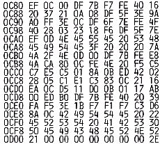
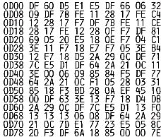

Nascom Journal |
Dezember 1981 · Ausgabe 11/12 |
abgespeichert, was aber kaumm ins Gewicht faellt, da sich dies nur durch eine kleine Verzoegerung am zeilenanfang bemerkbar macht.
Es bleibt noch anzumerken, dass beim Erscheinen des Textes zum Abspeichern kein anderes Zeichen mehr als „Control“ angenommen wird.
Der einsprung in das Programm ist bei C80.
Anmerkung der Redaktion: Die abgespeicherten Nullen der Margins werden dann störend, wenn der abgespeicherte Text mit einem Textverarbeitungsprogramm weiter bearbeitet werden soll. Dann muß man die Nullen mühsam wieder löschen. Der Nachteil kann aber im Programm sehr einfach ausgebügelt werden;
Nach dem INC HL in 0C9B müßte AND A ; JR Z 0C96 eingetragen werden. Um Platz für diese drei zusätzlichen Bytes zu schaffen (A7 28 F8) könnte man die drei Spaces im Text (0CAD-CAF) streichen und das Programm ab 0C9E um drei Adressen nach unten verschieben. 0C9A müßte dann noch 3 auf 06 verändert werden.
Die Idee zum Programm CONMOD kam mir, nachdem ich das Programm Reversi,dessen HEX Listing mit Prüfsumme abgedruckt wurde, mit dem L-Befehl eingegeben hatte. Was mich an diesem Eingabe Modus störte, waren folgende Punkte:
1.Die Adressen mußten mit eingetippt werden,
2.Es wurde kein Cursor dargestellt.
3.Fehler konnten nicht verbessert werden.
4.Wenn eine Zeile richtig eingegeben war, so wurde sie anschließend gelöscht.
Diese vier Punkte sorgten dafür, daß die Eingabe zur Strapaze wurde. War man nur einen Moment unkonzentriert, so wußte man nicht mehr, ob man die Spacetaste gedrückt hatte, oder man hatte die Zeilennummer vergessen, All dies führte zu Fehlern, die man nur durch Eingabe einer neuen Zeile verbessern konnte.
All diese Mängel sollte das neue Programm ändern. Es wird laut meinem Listing bei der Adresse 0D00 gestartet, ist aber voll relokatibel. Nach der Eingabe des ARG 1 wird für ARG 2 die Startadresse des einzugebenden Programms eingetippt. Das Programm führt Space und Newline automatisch aus, sowie die Adressierung der einzelnen Zellen. Man kann nun durch CL und CR die eingegebene Zeile bei Bedarf korrigieren. Nach der Eingabe der Prüfsumme wird die Zeile auf Fehler hin untersucht, Wird ein Fehler festgestellt, so gibt der Computer ein „E“ aus und ruft die Inline Routine auf. Dadurch wird ermöglicht, daß alle Screen Editing Befehle genutzt werden können. Bei der Eingabe der Zeile wurden die Edit-Befehle wie BS und SPACE nicht als solche verwendet. Sollte man einmal aus Versehen eben genannte Zeichen verwendet haben, so kann man Space durch CL rückgängig machen; bei BS wird es schon etwas schwieriger: am besten, man merkt sich die Zeilennummer und drückt die Reset Taste. Zeilen werden nur übernommen bei richtiger Prüfsumme.

| Seite 40 von 55 |
|---|